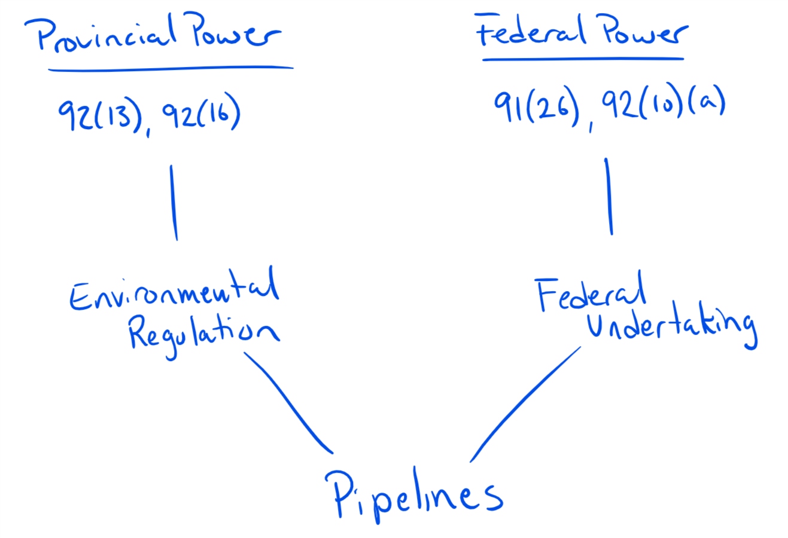

, edited:
The double-aspect doctrine

Federalism is a broad subcategory within Canadian constitutional law. In this context, federalism refers to the division of law-making power between our provincial and federal governments.
In a federal system of government such as ours, political power is shared by two orders of government: the federal government on the one hand, and the provinces on the other. Each is assigned respective spheres of jurisdiction by the Constitution Act, 1867. The federal structure of our country also facilitates democratic participation by distributing power to the government thought to be most suited to achieving the particular societal objective having regard to this diversity.
But, this division of power is not watertight. “The history of Canadian constitutional law has been to allow for a fair amount of interplay and indeed overlap between federal and provincial powers.” One way that this overlap plays out is through the double-aspect doctrine.
Multiple Access Ltd v McCutcheon, the case generally used to introduce the double-aspect doctrine, conflates two kinds of doubleness and this can lead to an overly narrow conception of the doctrine. This article presents how I’ve come to think of the double-aspect doctrine and one way of teasing apart the ways in which the doctrine is used.
Multiple Access concerned legislation enacted by the federal and Ontario governments with provisions that overlapped significantly both in their expression and in the people and conduct covered. Look at section 100.4 of the Canada Corporations Act and section 113 of Ontario’s Securities Act to see how similar the provisions were: they prohibited the exact same activities.
Multiple Access Ltd was a federally incorporated company, so was within scope of the Canada Corporations Act. It also had its public stock listed for trading on the Toronto Stock Exchange, bringing it within the scope of Ontario’s Securities Act.
Multiple Access’s shareholders got Ontario’s Securities Commission to commence insider-trading enforcement against the company under the Ontario act. Those shareholders could have equally sought enforcement under the federal act, but the limitations period under the federal act had expired. This was the only material difference between the two acts as they applied to this company.
Multiple Access asked the court to declare that the federal act (with the already-expired limitations period) was valid and thus render the provincial law invalid. That second step (rendering the provincial law invalid) would only follow if the validity of a federal provision precludes the validity of a nearly-identical provincial law given the division of powers set out in sections 91 and 92 of the Constitution Act, 1867. Multiple Access argued that a particular provision could only be valid as either federal or provincial legislation and that the court had to choose.
The court used the double-aspect doctrine to avoid this choice. It explained the doctrine using material from an article by William Lederman, “Classification of Laws and the British North America Act.” Lederman’s article and Multiple Access contemplate one kind of scenario in which the double-aspect doctrine can arise (when the court is asked to choose which of the federal or provincial governments gets to pass a particular law), but in this scenario, two kinds of doubleness are conflated.
Multiple Access and Lederman’s article talk about the double-aspect doctrine as if the federal and provincial governments are playing tug-of-war over one particular law, asking, “who gets to enact it?” Double-aspect enters when the answer is, “both of you.” This is the setting where we look for a 50/50 split between the provincial and federal features of a law. If a law has a roughly 50/50 split between its provincial and federal features, then the court will find both the provincial and federal provisions valid. This is what happened in Multiple Access.
[…] some overlapping inevitably remains. Where this occurs, either one of two things has then been done. First, the nature of the challenged law relevant to a provincial class of powers has been completely ignored as only an “incidental affectation” of the provincial sphere, and the law concerned has been classed only by that feature of it relevant to a federal class of laws. Thus, in spite of the logical overlap the decision is made that only the federal Parliament has power to enact the challenged law. Obviously this decision involves a judgement that the provincial feature of the law is quite unimportant relative to its federal feature. On the other hand if the federal feature be deemed quite unimportant relative to the provincial feature, then the converse decision would be made. […]
But, if the contrast between the relative importance of the two features is not so sharp […] the decision is made that the challenged rule could be enacted by either the federal Parliament or a provincial legislature. [emphasis added]
However, the double-aspect doctrine is not so narrow: it is used even when duplication is not an issue. In 1883, the Privy Council characterized it broadly: “subjects which in one aspect and for one purpose fall within section 92, may in another aspect and for another purpose fall within section 91.” Some notes in Canadian Constitutional Law try to explain this, but it’s easy to miss. In its broadest conception, the double-aspect doctrine explains any scenario where the courts allow legislation from our two levels of government to touch a particular field. The double-aspect doctrine is not reserved for cases where the two levels of government play tug-of-war over a provision; it is also at play when they play tug-of-war over a field, through different provisions, through different law.
“In most cases, application of the doctrine simply entails the court evidencing a willingness to apply the pith and substance doctrine flexibly, and to characterize similar federal and provincial enactments in such a manner as to permit the court to uphold both enactments as valid.”
Here are some more recent statements that demonstrate the breadth of the doctrine:
Activities, acts or conduct can sometimes be viewed from different normative perspectives, one relating to a federal power and the other to a provincial power. Where this is the case, the double aspect doctrine is engaged.
“Double occupancy” of a field of endeavour, such as health, is a permanent feature of the Canadian constitutional order. It leads to a standard “double aspect” analysis under which both aspects subsist side by side.
[G]aming is a matter that falls within the “double aspect” doctrine. Accordingly, gaming can be subject to legislation by both the federal and provincial governments.
Notes
1. ↑ “Part 2.1 does cross the line between environmental laws of general application and the regulation of federal undertakings. Even if it were not intended to ‘single out’ the TMX pipeline, it has the potential to affect (and indeed ‘stop in its tracks’) the entire operation of Trans Mountain as an interprovincial carrier and exporter of oil. It is legislation that in pith and substance relates to, and relates only to, what makes the pipeline “specifically of federal jurisdiction.”” Reference re Environmental Management Act (British Columbia), 2019 BCCA 181 at para 101.
2. ↑ Reference re Secession of Quebec, [1998] 2 SCR 217 at paras 55–60.
3. ↑ Ontario (Attorney General) v OPSEU, [1987] 2 SCR 2 at para 27.
4. ↑ Multiple Access Ltd v McCutcheon, [1982] 2 SCR 161.
5. ↑ Canada Corporations Act, RSC 1970, c C-32, s 100.4(1) (“Every insider of a company, every person employed or retained by the company, the auditor of the company and every associate of the insider and affiliate of the insider within the meaning of subsection 125(3) who, in connection with a transaction relating to the securities of the company, makes use of any specific confidential information for his own benefit or advantage that, if generally known, might reasonably be expected to affect materially the value of the securities of the company, is liable to compensate any person for any direct loss suffered by that person as a result of the transaction, unless the information was known or ought reasonably to have been known to that person at the time of such transaction, and is also accountable to the company for any direct benefit or advantage received or receivable by such insider, employed or retained person, auditor, associate or affiliate, as the case may be, as a result of the transaction”).
6. ↑ The Securities Act, RSO 1970, c 426, s 113(1) (“Every insider of a corporation or associate or affiliate of such insider, who, in connection with a transaction relating to the capital securities of the corporation, makes use of any specific confidential information for his own benefit or advantage that, if generally known, might reasonably be expected to affect materially the value of such securities, is liable to compensate any person or company for any direct loss suffered by such person or company as a result of such transaction, unless such information was known or ought reasonably to have been known to such person or company at the time of such transaction, and is also accountable to the corporation for any direct benefit or advantage received or receivable by such insider, associate or affiliate, as the case may be, as a result of such transaction”).
7. ↑ Hodge v The Queen, [1883] UKPC 59.
8. ↑ Patrick Macklem et al, Canadian Constitutional Law (Toronto: Emond, 2016) at 233.
9. ↑ Ibid at 233.
10. ↑ Reference re Assisted Human Reproduction Act, 2010 SCC 61 at para 185.
11. ↑ Ibid at para 67.
12. ↑ Siemens v Manitoba (Attorney General), 2003 SCC 3 at para 22.